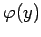
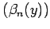

Inhalt Index DeskTop Bronstein

 Lineare Integralgleichungen Fredholmsche Integralgleichung 1. Art
Lineare Integralgleichungen Fredholmsche Integralgleichung 1. Art


Es soll ein lineares Gleichungssystem zur Berechnung der FOURIER-Koeffizienten der Lösungsfunktion  bezüglich eines Orthonormalsystems aufgestellt werden. Dazu wird ein vollständiges Orthonormalsystem  mit  gewählt. Ein entsprechendes vollständiges Orthonormalsystem
gewählt. Ein entsprechendes vollständiges Orthonormalsystem  möge auch für das Intervall vorliegen. Bezüglich des Systems
möge auch für das Intervall vorliegen. Bezüglich des Systems  besitzt die Funktion f(x) die FOURIER-Reihe
besitzt die Funktion f(x) die FOURIER-Reihe
Die Multiplikation der Integralgleichung (11.41) mit und die anschließende Integration bezüglich x in den Grenzen von c bis d liefert:
erhält man
Das ist ein System mit unendlich vielen Gleichungen zur Bestimmung der FOURIER-Koeffizienten . Die Koeffizientenmatrix
wird als Kernmatrix bezeichnet. Die Zahlen fi und sind bekannte Größen, aber von der Wahl der Orthonormalsysteme abhängig.
| Beispiel | ||
|
. Daraus folgt Die FOURIER-Koeffizienten von f(x) lauten gemäß (11.46a)
Auf Grund der ersten Gleichung besitzt das System nur dann eine Lösung, wenn gilt |